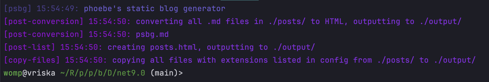

I love to write my own tools: this is no secret, and something that's evident if you look at my GitHub for even a second. pebs, palc, and phdt all came to exist, both out of need and just boredom. For all the tasks that these tools do, there are plenty of other options - but where's the fun in that.
psbg came to exist because I want to try to write more about the things I make, and I thought maybe a blog could supplement this want. I could've used any number of static site generators for this, but obviously - making my own made the most sense to me at the time. I don't regret the decision either.
I wrote psbg in C# because, I'm not sure if anyone's noticed, I like to use C# (even with the protests of some of the people I know. I don't know how to use Rust, and I don't want to learnnnn!!!!).
At the start of working on psbg, I had no idea how I was going to:
- read and convert Markdown to HTML
- obviously, I knew there'd probably be a bajillion libraries that'd do exactly what I want.
- manipulate HTML templates
- I actually found a few ways to do this, one of which really pissed me off super fast. I'll talk about that in a moment.
- store post metadata
These tasks weren't mountains, but they're things that I had no clue how to deal with, so to StackOverflow it was.
Markdown was easily and very quickly sorted. A quick Google Search and browse of NuGet pointed me toward Markdig. Awesome.
Markdig is incredibly simple, straight forward, and covers basically all I need it to. Parsing a string into Markdown was as simple as Markdown.Parse(fileContent);, and to HTML from there was as genuinely simple as md.ToHtml();.
From there, I had a simple tool that'd read a single Markdown file and drop the contents of it into a HTML file. Cool, but it's not really a blogpost generator yet - you couldn't really set a title, specify a date, or who wrote it.
You could just include it in each file, but then you'd not really be able to do any fancy-schmancy formatting of it, outside of what Markdown allowed for.
So, I'd decided to make use of Markdown's ability to include "frontmatter", which is just a block of YAML that could contain any number of key value pairs.
This wasn't hard and lots of people online have done it already, and that fact alone made it super easy to get done. This article from Khaled Atashbahar, was incredibly useful for parsing Markdown frontmatter - because I actually had no clue where to get started. I don't work with Markdown, outside typical usage.
So now, post files look like this:
---
title: "This is a post"
date: "03/05/2025"
author: "phoebe"
---
Something something uhh something.
Great! We've got metadata in posts, and.. nowhere to put that metadata on pages. Fuck.
I'd completely glossed over the detail that just spitting converted Markdown into files isn't nice to look at, and well - you'd probably want to be able to customise your blog to how you want it.
So, I had to figure out how I was going to allow people to make template pages.
Initially, my first thought was: "hmm, I could just like.. replace strings in strings.", but I didn't really like that. It just felt icky and hacky. Back to square one.
With a little bit of searching, I found Aspose.HTML - this library let me manipulate HTML as if I was using JavaScript. That was easy.
.. right?
I copied a page off my website, turned it into what I expect a "blog post" to look like, and set a bunch of elements IDs to be distinct and logical to what they are. Hell, you can actually just look at the source of this page and see exactly what I mean.
From here, things looked pretty good. I made it set the element responsible for title, date, and author and things looked fine. Sweet!
I tried to set the content of the element responsible for showing the post content to the converted Markdown, and I expected it to just be functional - only to be met with half the page broken and a highly disruptive evaluation copyright text from Aspose.
Nice, okay. Fuck me. That's cool.
I didn't see the NuGet page until I was trying to figure out what happened, and then I saw the "Download FREE Trial" image. Okay. That's.. fun.
So, I was again back at
square fucking one
Okay.
A little more Googling led me to HTMLAgilityPack, which was similar enough to Aspose.HTML in terms of functionality that I could just change some bits over and it worked. At this point, we are so fucking back and things could keep moving.
From here, I got it to a point where I could generate a pretty HTML page from a Markdown file. I made it repeat this for each Markdown file in a directory and bam. You've got pretty HTML files, from a bunch of Markdown files.
That's cool, and at this point - you could kind of use it like a blog. Pop it on a webserver that supported listing directories, and you'd kind of have it. I didn't like that though.
This meant that I had to also make it generate a pretty list of posts. Fortunately, this was super easy and had no hitches. In fact, it actually was probably the easiest part of the entire project.
Oh well!
At this point, psbg is functional as a static blog generator. It didn't copy images used in posts automatically, and is still unclean code-wise, but it works and that's what matters. Right?
Actually - the "at this point" is now, the current time of writing. I'm writing this not only as a test of psbg, but as a way to just talk about the process of making it - which if you remember the start of this post, is the exact reason I wanted to start blogging in the first place: I want to talk about the things I make.
There's a lot of changes I'd still like to make, and a lot of cleanup to do. I've got a great deal of spare time for a little, and I'll probably make use of that to finish psbg fully.
To finish up: psbg is a static site generator intended for blogging. I had a lot of fun writing it, I intend to continue working on it, and I also really dislike Aspose.
6/5/25: psbg has been prettified a little bit, much like my other tools! logs are coloured, and contain information about what's happening at the time - such as errors if your template is missing pieces that would make an article unreadable.

also now copies other files outside of just converting
.md, as long as they're listed within the approved extensions in your config - this means including photos, like seen above is easier now. you'll probably still need to make adjustments to your template to fit them in: for mine, i had to limit image width to 768px (looked fine across most screen sizes) and set image height to auto. realistically, this shouldn't be an issue for most though.
psbg is for the most part complete in what i want it for - i will eventually setup github actions to release builds whenever i publish changes, but until then - you need to compile it yourself.
29/5/25: you can now create summaries for the post list in your posts, and also style the post list however you want. small change, but a good one nonetheless I think :)
I'd like to write a lot more about the things I make: the little tools, Discord bots, and my larger university projects. I'm not great at writing, and I'd like to change that.
If you'd like to see more small updates from me, you should probably follow my socials (Twitter, Bluesky, Mastodon, etc.). I'll probably make a post on one of those whenever I make a post here.